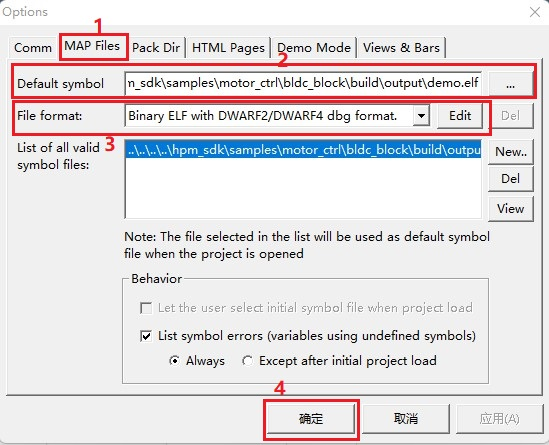
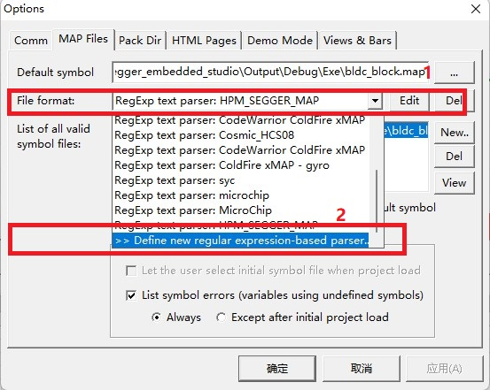
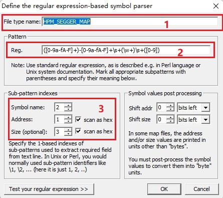
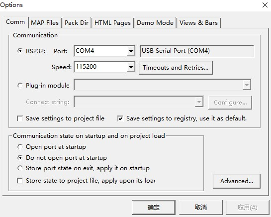
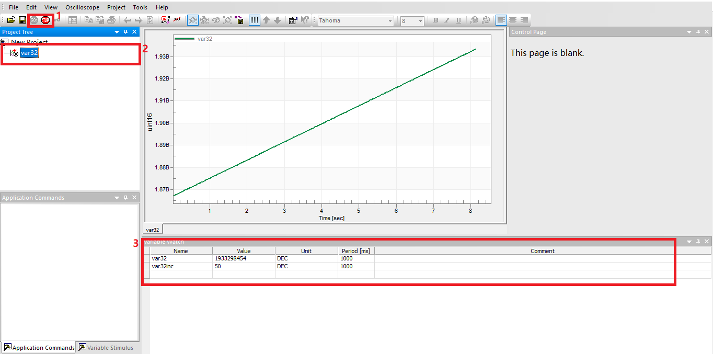

Freemaster¶
概述¶
freemaster工程主要演示如何通过freemaster对工程进行调试，主要内容如下：
freemaster MCU部分程序的初始化
freemaster修改并观察全局变量
freemaster入门级使用方法
配置¶
计算机已经正确安装了freemaster
插入debug调试线，开启目标板电源
计算机可以正确识别到串口和调试接口，记录当前的串口号
运行现象¶
确保你已经成功编译了工程，并已经生成elf格式文件
在工程目录下找到freemaster.pmpx的文件并双击打开
在freemaster中加入编译生成的elf文件
如果使用gnu-gcc或者nds-gcc编译，请使用如下方式配置：
点击 Project->Options 可以出现下图，按照下图所示顺序和内容进行配置：

如果使用segger环境，情况稍微复杂一点，请使用如下方式配置：
注意: 这里需要修改Default symbol载入的文件格式为map格式
打开配置File format的下拉列表并点击，如下图：

然后按照如下内容进行配置，下文列出代码，方便拷贝
HPM_SEGGER_MAP ([0-9a-fA-F]+)-[0-9a-fA-F]+\s+(\w+)\s+([0-9])
配置后应当如图所示：

freemaster选择正确的串口，点击 Project->Options->Comm 并按照下图进行配置

通过freemaster观察变量变化
点击GO图标，使freemaster与目标板建立通讯
点击
var32，可以观察到图像变化修改
var32inc可以观测到图像斜率变化
可以参考下图进行操作：

可以通过双击上图区域3的空白行自行添加变量